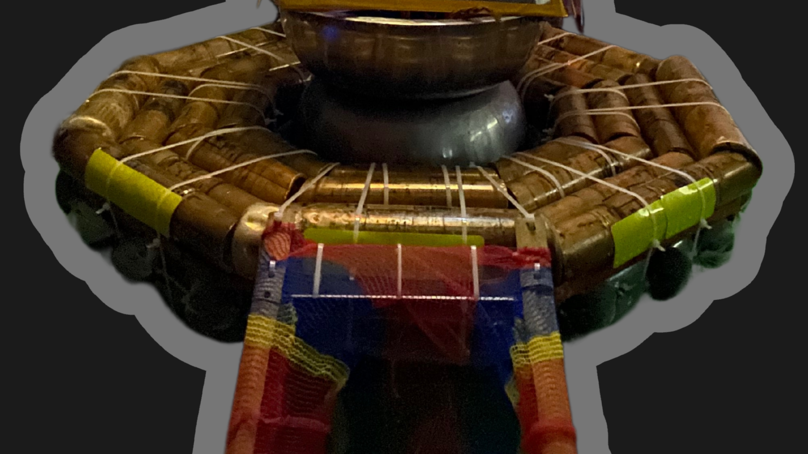

SalbaKita
An Intelligent Water-Rescue & Cleanup Robot
▶ Monitor PanelAbout


Summary
SalbaKita introduces a sustainable, multifunctional aquatic robot designed to tackle major issues in water safety, marine life conservation, and pollution control. Made from eco-friendly, repurposed materials like bamboo, wood, and plastic bottles, Salbakita reflects a commitment to both technological innovation and environmental responsibility.
Key Features
-
Buoy System ▼
SalbaKita is designed with an integrated buoy system that allows it to maintain stable flotation on the water surface. This ensures the robot remains visible and accessible during emergencies, making it easier for individuals to locate and use it when in distress.
 -
Real-Time Monitoring ▼
Equipped with a cameras that captures surroundings at 360 degrees with 1-megapixel resolution, SalbaKita allows real-time video monitoring directly connected to a computer. This enables coastguards and responders to oversee the robot’s surroundings and activity as it operates in the water.

-
Distress Signal Activation ▼
SalbaKita features an Emergency Alarm System that individuals can activate by pulling a rope. This triggers a 110-decibel alarm, audible up to 17.6 meters away, immediately alerting nearby responders and increasing the chance of timely rescue.

-
GPS & Bluetooth ▼
The integration of a Global Positioning System (GPS) allows SalbaKita’s location to be tracked accurately in real time. This feature supports precise monitoring and coordination during rescue operations or environmental missions.

-
Autonomous Mobility ▼
With a built-in propeller system, SalbaKita is capable of autonomous movement through water. This allows it to navigate swiftly and efficiently to target locations with a speed of 512 m/s², ensuring timely arrival during emergencies or clean-up tasks.

Demo
Watch SalbaKita in action as it performs water-rescue and cleanup operations.
Official SalbaKita Trailer – A glimpse into our mission to save lives and protect aquatic ecosystems.
SalbaKita in action – Demonstrating real-time water rescue and environmental cleanup.
Technical Details
- 8 Solar Panels – Harness clean, renewable energy from sunlight for daytime charging and operations.
- 8 Rechargeable Batteries – Each rated at 8.4V/1800mAh, providing robust backup power during low-light conditions.
- Hydrogen-Based Fuel Cell – Enhances energy efficiency and extends runtime for high-demand scenarios.
- Smart Phototransistor Sensors – Automatically switch between day and night modes, optimizing energy consumption based on environmental light.
- Average Runtime: Up to 8 Hours of uninterrupted performance — ideal for extended rescue or monitoring missions.
- Structural Frame: Bamboo (Bayog), wood, PET bottles for enhanced buoyancy
- Reinforcement: Square tube aluminum (12 ft), stainless steel bowls
- Protection: Laminating film (PET+EVA) for battery insulation and waterproofing (IP65)
- Motion: 4 x 12V motors driving propellers with speed up to 0.016 m/s
- Connectivity: TXT 4.0 Controllers (master + extension) + FT App
- Controller Range: 50.5m (unobstructed), 47.35m (obstructed)
- Ultrasonic Sensors: Detect objects and initiate auto-approach behavior
- Phototransistor: Switches operation between Day/Night with auto-light control
- GPS Module: Provides accurate location tracking up to 120m Bluetooth range
- Motion Detection: Alarm triggers when motion is detected via sensor and lever
- LEDs: 6 white LEDs ensure high visibility in nighttime rescues
- Average Rescue Response Time: 3:13 – 4:28 mins for 4 meters distance
- Waste Collection (Manual): Up to 5 kg in ~5.5 mins; average 4 kg in 3.5 mins
- Waste Collection (Auto): Up to 5 kg, fully autonomous, lever-triggered
- Carrying Capacity: Up to 60 kg (tested with 35–60 kg loads)
- Speed with Load: 0.013 – 0.016 m/s across 1 meter distance
Contact Us!
salbakita@gmail.com
For emergencies, please use the following hotlines:
- Santa Rosa MDRRMO: 0998 967 6004
- Santa Rosa Police Station: 0926 269 5602 0998 598 5432
- Santa Rosa BFP: 0995 874 6877 0943 595 7710
- Municipal Disaster Reduction and Risk Management Council (MDRRMC): 0916 3164 974 0915 6444 338